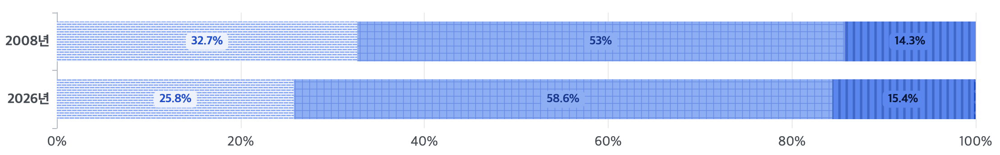
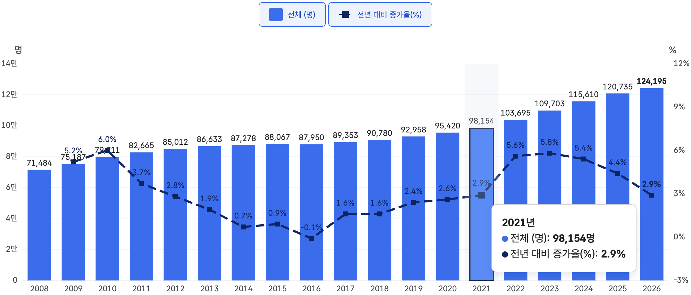
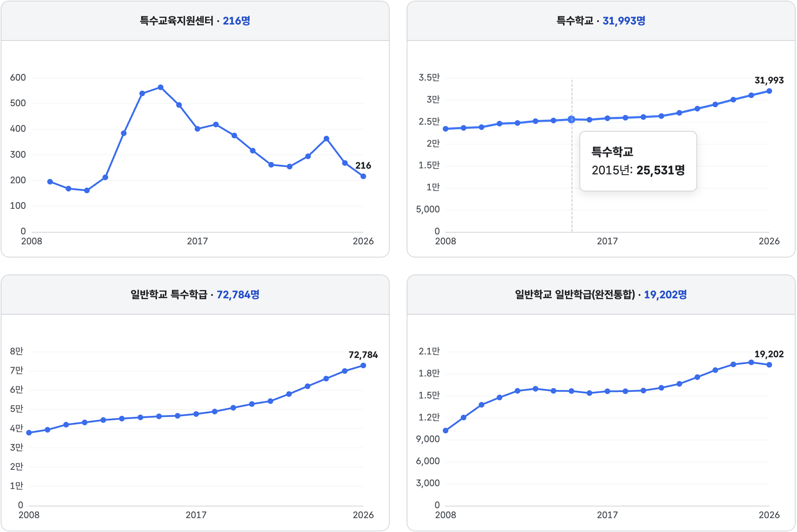
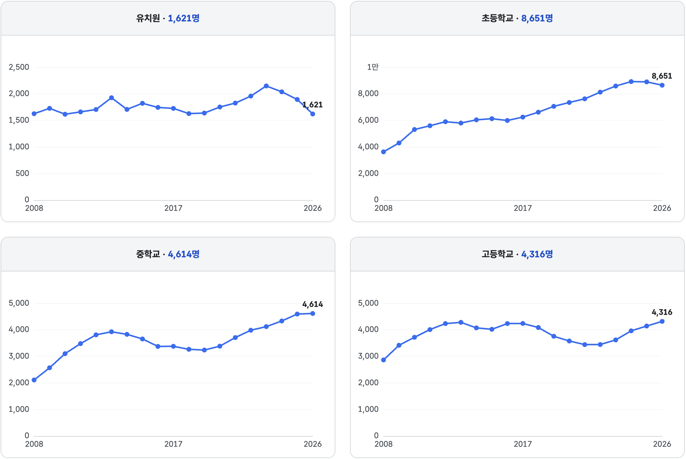
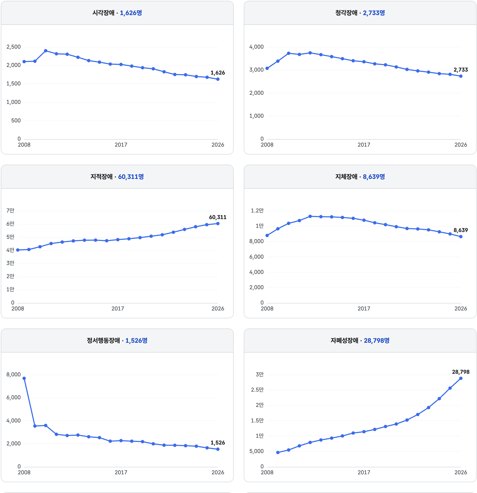
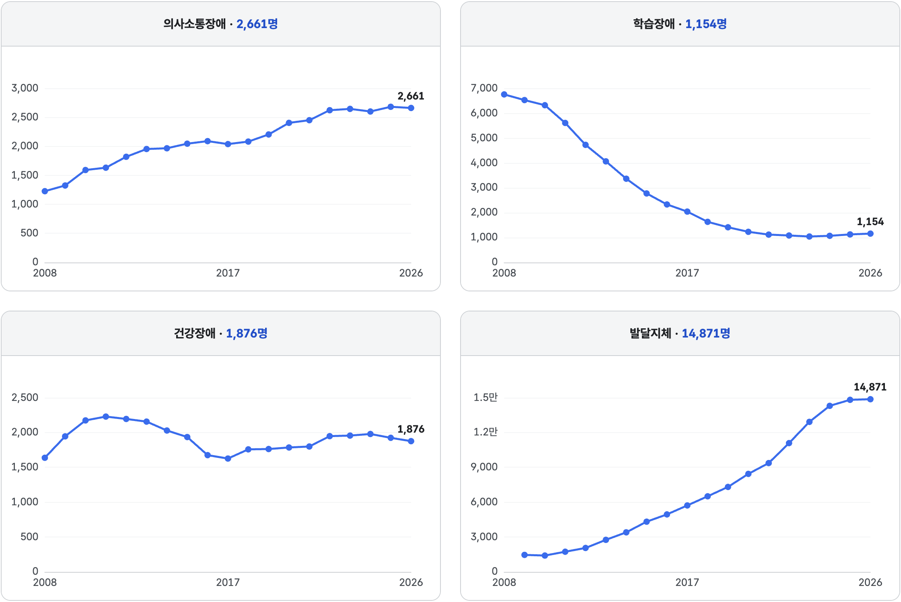
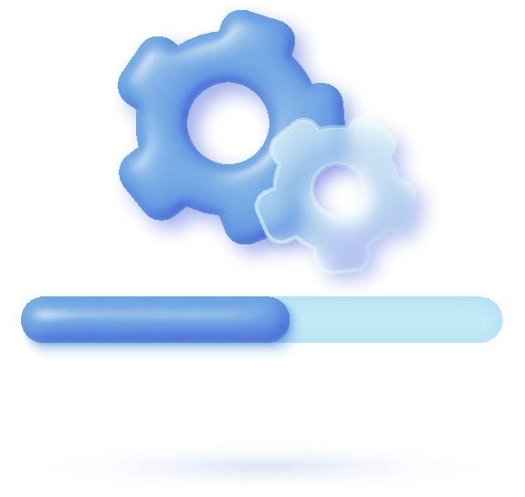

특수교육대상자
124,195명
2008년 71,484명 대비 +73.7%
일반학교 배치 비중
67.3 에서 74.1%
+6.8%p · 학생 100명 중 74명이 일반학교에 배치
유치원 과정 재학생
7,498명
2008년 3,236명 대비 2.3배 · 조기개입 확대
특수교육 운영 기관
18,373개교
2008년 9,910개교 대비 +85.4%
특수학급 운영 일반학교
9,930개교
2008년 4,971개교 대비 +99.8%
일반학급에서 함께 배우는 학생
19,202명
2008년 10,227명 대비 +87.8%
2008 ~ 2026 · 특수교육통계 자료에서 발췌한 내용입니다.
막대 길이는 학생 수 규모가 아닌 비율(%)을 나타냅니다

학생 수 기준으로 본 특수교육대상자 연도별 지표 입니다.

| 구분 | 2008 | 2009 | 2010 | 2011 | 2012 | 2013 | 2014 | 2015 | 2016 | 2017 | 2018 | 2019 | 2020 | 2021 | 2022 | 2023 | 2024 | 2025 | 2026 |
|---|---|---|---|---|---|---|---|---|---|---|---|---|---|---|---|---|---|---|---|
| 전체 | 71,484 | 75,187 | 79,711 | 82,665 | 85,012 | 86,633 | 87,278 | 88,067 | 87,950 | 89,353 | 90,780 | 92,958 | 95,420 | 98,154 | 103,695 | 109,703 | 115,610 | 120,735 | 124,195 |
표를 좌우로 이동하여 확인하세요.
급별 구분 안내 — 원자료에는 장애유형별 구분이 포함되어 있지 않아 배치 유형을 가로지르는 학교과정별(장애영아·유치원·초등학교·중학교·고등학교·전공과) 구분을 제공합니다.
출처 - 교육부 국립특수교육원, 특수교육통계 (2008~2026년) — 행정통계 기준으로 실태조사 결과와 집계 대상·시점이 다를 수 있습니다.
계열 간 규모 차이가 커 계열별 독립 패널로 표시합니다 — 각 패널의 세로축 눈금이 다르니 값은 축·수치로 확인해 주세요 · 특수교육지원센터의 2008년 값은 원자료에 없어 '미집계'로 표시합니다

| 구분 | 2008 | 2009 | 2010 | 2011 | 2012 | 2013 | 2014 | 2015 | 2016 | 2017 | 2018 | 2019 | 2020 | 2021 | 2022 | 2023 | 2024 | 2025 | 2026 |
|---|---|---|---|---|---|---|---|---|---|---|---|---|---|---|---|---|---|---|---|
| 특수교육지원센터 | 71,484 | 75,187 | 79,711 | 82,665 | 85,012 | 86,633 | 87,278 | 88,067 | 87,950 | 89,353 | 90,780 | 92,958 | 95,420 | 98,154 | 103,695 | 109,703 | 115,610 | 120,735 | 124,195 |
| 특수학교 | 71,484 | 75,187 | 79,711 | 82,665 | 85,012 | 86,633 | 87,278 | 88,067 | 87,950 | 89,353 | 90,780 | 92,958 | 95,420 | 98,154 | 103,695 | 109,703 | 115,610 | 120,735 | 124,195 |
| 일반학교 특수학급 | 71,484 | 75,187 | 79,711 | 82,665 | 85,012 | 86,633 | 87,278 | 88,067 | 87,950 | 89,353 | 90,780 | 92,958 | 95,420 | 98,154 | 103,695 | 109,703 | 115,610 | 120,735 | 124,195 |
| 일반학교 일반학급(완전통합) | 71,484 | 75,187 | 79,711 | 82,665 | 85,012 | 86,633 | 87,278 | 88,067 | 87,950 | 89,353 | 90,780 | 92,958 | 95,420 | 98,154 | 103,695 | 109,703 | 115,610 | 120,735 | 124,195 |
표를 좌우로 이동하여 확인하세요.
출처 - 교육부 국립특수교육원, 특수교육통계 (2008~2026년) — 행정통계 기준으로 실태조사 결과와 집계 대상·시점이 다를 수 있습니다.
'장애영아'는 특수학교 장애영아 과정과 특수교육지원센터를 합산한 값입니다 · 2008년은 장애영아 구분이 없어 '미집계'로 표시합니다.

| 구분 | 2008 | 2009 | 2010 | 2011 | 2012 | 2013 | 2014 | 2015 | 2016 | 2017 | 2018 | 2019 | 2020 | 2021 | 2022 | 2023 | 2024 | 2025 | 2026 |
|---|---|---|---|---|---|---|---|---|---|---|---|---|---|---|---|---|---|---|---|
| 장애영아 | 71,484 | 75,187 | 79,711 | 82,665 | 85,012 | 86,633 | 87,278 | 88,067 | 87,950 | 89,353 | 90,780 | 92,958 | 95,420 | 98,154 | 103,695 | 109,703 | 115,610 | 120,735 | 124,195 |
| 유치원 | 71,484 | 75,187 | 79,711 | 82,665 | 85,012 | 86,633 | 87,278 | 88,067 | 87,950 | 89,353 | 90,780 | 92,958 | 95,420 | 98,154 | 103,695 | 109,703 | 115,610 | 120,735 | 124,195 |
| 초등학교 | 71,484 | 75,187 | 79,711 | 82,665 | 85,012 | 86,633 | 87,278 | 88,067 | 87,950 | 89,353 | 90,780 | 92,958 | 95,420 | 98,154 | 103,695 | 109,703 | 115,610 | 120,735 | 124,195 |
| 중학교 | 71,484 | 75,187 | 79,711 | 82,665 | 85,012 | 86,633 | 87,278 | 88,067 | 87,950 | 89,353 | 90,780 | 92,958 | 95,420 | 98,154 | 103,695 | 109,703 | 115,610 | 120,735 | 124,195 |
| 고등학교 | 71,484 | 75,187 | 79,711 | 82,665 | 85,012 | 86,633 | 87,278 | 88,067 | 87,950 | 89,353 | 90,780 | 92,958 | 95,420 | 98,154 | 103,695 | 109,703 | 115,610 | 120,735 | 124,195 |
| 전공과 | 71,484 | 75,187 | 79,711 | 82,665 | 85,012 | 86,633 | 87,278 | 88,067 | 87,950 | 89,353 | 90,780 | 92,958 | 95,420 | 98,154 | 103,695 | 109,703 | 115,610 | 120,735 | 124,195 |
표를 좌우로 이동하여 확인하세요.
급별 구분 안내 — 원자료에는 장애유형별 구분이 포함되어 있지 않아 배치 유형을 가로지르는 학교과정별(장애영아·유치원·초등학교·중학교·고등학교·전공과) 구분을 제공합니다.
출처 - 교육부 국립특수교육원, 특수교육통계 (2008~2026년) — 행정통계 기준으로 실태조사 결과와 집계 대상·시점이 다를 수 있습니다.
10개 장애유형을 유형별 독립 패널로 표시합니다 — 패널마다 세로축 눈금이 다릅니다 · 2008년은 정서장애에 자폐성장애가 포함되어 집계되었고(정서행동장애 7,681명), 발달지체는 2009년부터 조사되어 두 유형의 2008년 값은 '미집계'로 표시합니다


| 구분 | 2008 | 2009 | 2010 | 2011 | 2012 | 2013 | 2014 | 2015 | 2016 | 2017 | 2018 | 2019 | 2020 | 2021 | 2022 | 2023 | 2024 | 2025 | 2026 |
|---|---|---|---|---|---|---|---|---|---|---|---|---|---|---|---|---|---|---|---|
| 시각장애 | 71,484 | 75,187 | 79,711 | 82,665 | 85,012 | 86,633 | 87,278 | 88,067 | 87,950 | 89,353 | 90,780 | 92,958 | 95,420 | 98,154 | 103,695 | 109,703 | 115,610 | 120,735 | 124,195 |
| 청각장애 | 71,484 | 75,187 | 79,711 | 82,665 | 85,012 | 86,633 | 87,278 | 88,067 | 87,950 | 89,353 | 90,780 | 92,958 | 95,420 | 98,154 | 103,695 | 109,703 | 115,610 | 120,735 | 124,195 |
| 지적장애 | 71,484 | 75,187 | 79,711 | 82,665 | 85,012 | 86,633 | 87,278 | 88,067 | 87,950 | 89,353 | 90,780 | 92,958 | 95,420 | 98,154 | 103,695 | 109,703 | 115,610 | 120,735 | 124,195 |
| 지체장애 | 71,484 | 75,187 | 79,711 | 82,665 | 85,012 | 86,633 | 87,278 | 88,067 | 87,950 | 89,353 | 90,780 | 92,958 | 95,420 | 98,154 | 103,695 | 109,703 | 115,610 | 120,735 | 124,195 |
| 정서행동장애 | 71,484 | 75,187 | 79,711 | 82,665 | 85,012 | 86,633 | 87,278 | 88,067 | 87,950 | 89,353 | 90,780 | 92,958 | 95,420 | 98,154 | 103,695 | 109,703 | 115,610 | 120,735 | 124,195 |
| 자폐성장애 | 71,484 | 75,187 | 79,711 | 82,665 | 85,012 | 86,633 | 87,278 | 88,067 | 87,950 | 89,353 | 90,780 | 92,958 | 95,420 | 98,154 | 103,695 | 109,703 | 115,610 | 120,735 | 124,195 |
| 의사소통장애 | 71,484 | 75,187 | 79,711 | 82,665 | 85,012 | 86,633 | 87,278 | 88,067 | 87,950 | 89,353 | 90,780 | 92,958 | 95,420 | 98,154 | 103,695 | 109,703 | 115,610 | 120,735 | 124,195 |
| 학습장애 | 71,484 | 75,187 | 79,711 | 82,665 | 85,012 | 86,633 | 87,278 | 88,067 | 87,950 | 89,353 | 90,780 | 92,958 | 95,420 | 98,154 | 103,695 | 109,703 | 115,610 | 120,735 | 124,195 |
| 건강장애 | 71,484 | 75,187 | 79,711 | 82,665 | 85,012 | 86,633 | 87,278 | 88,067 | 87,950 | 89,353 | 90,780 | 92,958 | 95,420 | 98,154 | 103,695 | 109,703 | 115,610 | 120,735 | 124,195 |
| 발달지체 | 71,484 | 75,187 | 79,711 | 82,665 | 85,012 | 86,633 | 87,278 | 88,067 | 87,950 | 89,353 | 90,780 | 92,958 | 95,420 | 98,154 | 103,695 | 109,703 | 115,610 | 120,735 | 124,195 |
표를 좌우로 이동하여 확인하세요.
출처 - 교육부 국립특수교육원, 특수교육통계 (2008~2026년) — 행정통계 기준으로 실태조사 결과와 집계 대상·시점이 다를 수 있습니다.
전체 기관 수는 각 연도 통계집 주요 현황 표의 공표 계를 그대로 표기했습니다.

준비중입니다.
기관 수 화면은 준비 중입니다.